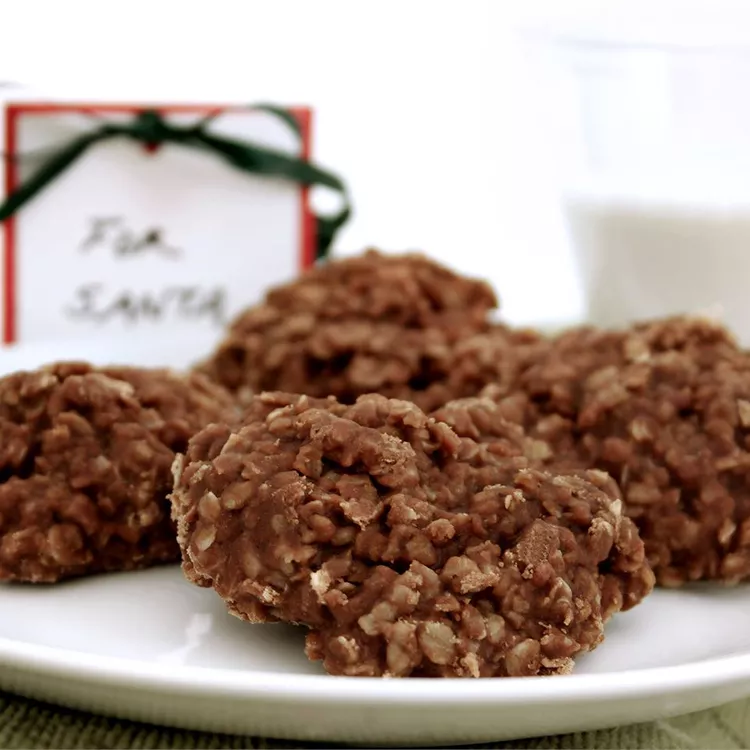

No Bake Cookies
Home

Description
An easy cookie for kids to make. Cocoa, peanut butter, and oatmeal make a chewy delicious cookie with some nutritional value.
Ingredients
- 2 cups white sugar
- ¼ cup unsweetened cocoa powder
- ½ cup milk
- ½ cup margarinez
- 1 teaspoon vanilla extract
- 1 pinch salt
- ½ cup chunky peanut butter
- 3 cups quick cooking oats
Steps
- In a saucepan over medium heat, combine the sugar, cocoa, milk and margarine. Bring to a boil, stirring occasionally. Boil for 1 minute, then remove from heat and stir in the vanilla, salt, peanut butter and oats.
- Drop by rounded spoonfuls onto waxed paper. Allow cookies to cool for at least 1 hour. Store in an airtight container.
Check out more recipes